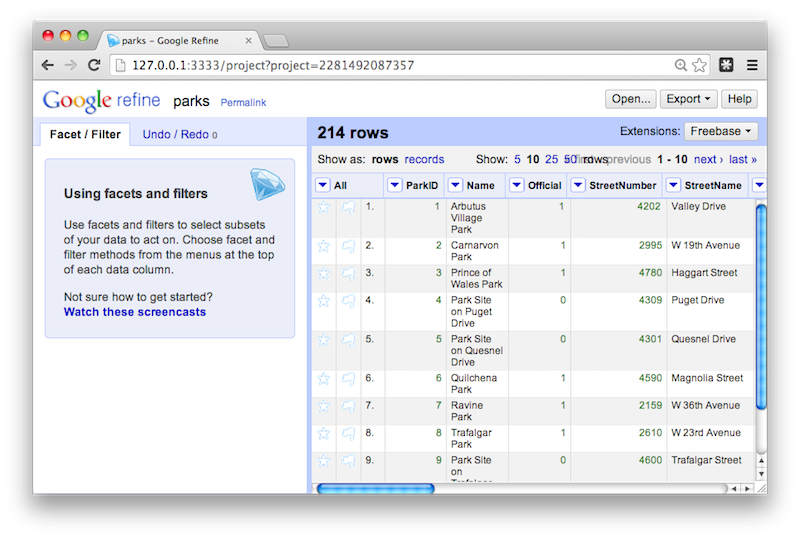
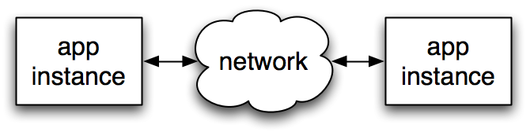
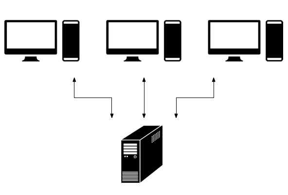
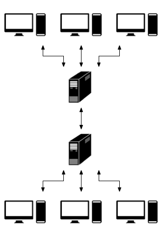
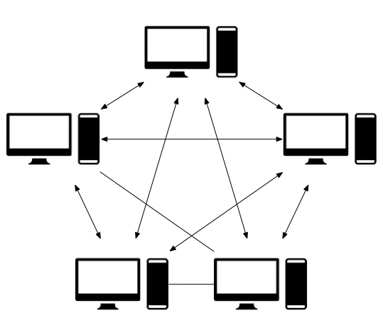
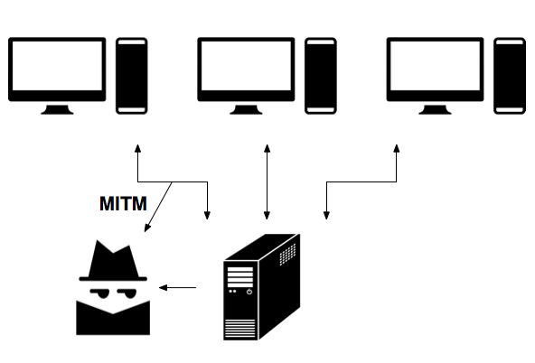
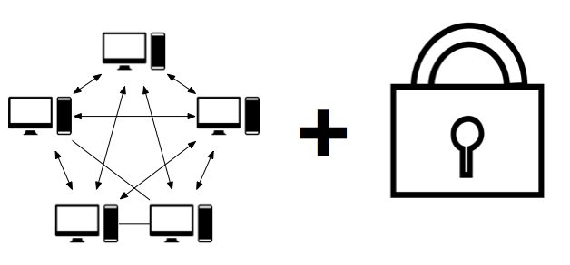
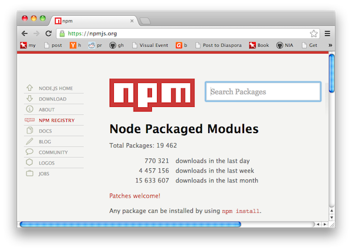
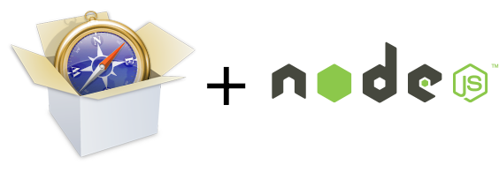
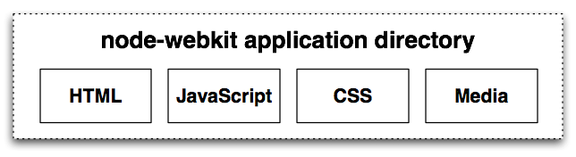

Creating Unhosted Apps
With Node.js
Mike Cantelon
February 25, 2014
Hi, I'm Mike
-
Node.js enthusiast
-
Co-author of "Node.js in Action"
-
Primarily a web applications developer
-
Develop open source digital archiving software
for Artefactual Systems
-
Thanks to Apex Systems and the Devnexus organizers
What this talk will cover
-
What unhosted apps are
-
Why you'd want to create them
-
Why Node.js is a good fit for creating them
-
How to create unhosted apps with Node
-
How to distribute unhosted apps
-
How to make unhosted apps look more "native"
What are unhosted apps?
An unhosted app is...
-
A web application you host on your workstation (rather
than a server)
-
Used like a desktop app: only start it up when you want
to use it
-
Examples: TiddlyWiki, Google Refine
Example: Google Refine

Three basic types of unhosted apps
-
Browser only (HTML5)
-
Browser and server (running locally)
-
Special runtime (integrating browser and server)
Access network if needed

- App instances share information
- Conceptually peer-to-peer
- Message passing between app instances
- Ideally messages are encrypted
Unhosted networked applications
Conventional hosted application

Federated hosted application

Federated unhosted application

Why create unhosted apps?
Advantages of unhosted apps over hosted apps
-
More responsive
-
Full access to workstation data and peripherals
-
Minimize dependence on network
-
No hosting costs
-
Data privacy
Common privacy issue

Encryption FTW

Unhosted web apps vs native apps
Advantages of unhosted apps
-
Cross-platform
-
Easier to port to a hosted application if
needed
-
Re-use web development knowledge
Potential disadvantages
- Non-native app UIs can be jarring
-
As apps move to the web, however, the web is increasingly perceived as "normal"
Using Node to develop unhosted apps
Browsers have limitations
-
Purely client-side browser applications have
limitations:
-
HTML5 storage is limited
-
Access to workstation storage is limited
-
Same-origin policy limits AJAX requests
-
Running a local server allows you to get
past these limitations
Why Node?
From developer perspective:
-
Apps are written in JavaScript: less mental context switching
-
Client-side code can be re-used when appropriate
Why Node?
From user persepctive:
-
Cross-platform
-
Easy to install
-
Takes little disk space
Example Node app: Finance
Example Node app: Finance
So what does programming in Node look like?
Installing Node is easy
-
Standalone installers for Windows and Mac OS X
-
Installers available at nodejs.org/#download
-
On Mac, with homebrew, you can "brew install node"
-
Compiling on Mac OS X (with XCode installed) and
Linux is also straightforward
Node's REPL
After installing Node, you can start the REPL by entering the following into a command-line prompt.
Then enter the following to make Node say its first words. CTRL-d to exit.
> console.log('Hello World!');
Hello World!
> ■
Running Node scripts
Node scripts require no boilerplate for displaying output.
Place the following code in a file named "hello_world.js".
console.log('Hello World!');
You can then run this script by entering the following into the command-line.
hello_web.js
In code below we require the "http" module.
We then create a server with it that will listen for HTTP requests on TCP/IP port 8888.
We use an anonymous function to specify what should be done with each request.
var http = require('http');
http.createServer(function (request, response) {
response.writeHead(200, {'Content-Type': 'text/plain'});
response.end('Hello Web!\n');
}).listen(8888);
Extending Node using modules
The Node package manager is super useful
-
NPM comes bundled with Windows and Mac OS X standalone installers
-
Can install modules into an application or make them available globally
-
Application-specific installation of modules allows you to install specific versions
-
Global install is useful for installing command-line tools written using Node
Installing and publishing modules with NPM
An example installation of a module:
When publishing a module, you must include a "package.json" file that specifies the module's name, version, etc.
An example of publishing a module:
Search npm via npmjs.org

Creating an unhosted app using Node
You'll need to...
-
Create HTTP server
-
Handle local data storage
-
Handle remote messaging/syncing (optional)
-
Handle user configuration
-
Distribute the application
Creating an HTTP server
-
Express framework is easiest option
-
Express gives you:
- Routing
- Static file handling
- Template engine integration
- Lots of community
Local data storage
- Browser:
- File-based:
-
node-dirty
-
sqlite
-
PouchDB
-
levelup
-
Traditional databases (MySQL, etc.) require the
end-user to install additional software
Remote messaging/syncing
- Messaging:
- Syncing:
- Browser peer-to-peer:
Distribution methods
|
Audience
|
Method
|
|
Non-devs
|
Standalone application
|
|
Non-Node devs
|
Tarball
|
|
Node devs
|
npm
|
Application distribution
-
Tarball or public git repository
-
npm
- Install globally, start app with a command
- Specified or random TCP/IP port
- Automatically open a web browser
-
Standalone installation
- Windows: node.exe and Inno Setup
- Linux and OS X: nexe
uam: unhosted app manager
-
An experimental tool and standard
-
Piggybacks on npm to make unhosted app
discovery easier
-
Also makes running unhosted apps easier
-
Only two steps to installing and launching in a browser
$ uam install uam-example
$ uam run uam-example
Making Node apps more "native"
Improving UI using node-webkit

-
node-webkit is a runtime that integrates a
customized version of Webkit with Node
-
Originally created by Intel
Example: Sputnik RSS Reader
node-webkit features
-
Cross-platform
-
Full screen and kiosk modes
-
Native UI functionality:
- Pull-down menus
- File dialogs
- Minimize to tray
- Clipboard access
-
Removes same-origin policy limits
Creating node-webkit applications
-
Put your files in a project directory:

-
Use npm to install needed modules in
node_modules
subdirectory
-
Put
package.json "manifest" in directory
Example package.json file
{
"name": "hello",
"main": "index.html",
"window": {
"toolbar": false,
"width": 800,
"height": 600
}
}
-
"main" element specifies initial HTML page to
display
-
"window" element specifies initial window
state
Example HTML entry page
<!DOCTYPE html>
<html>
<head>
<title>Window title goes here</title>
</head>
<body>
<script>
var markdown = require('markdown').markdown;
document.write(markdown.toHTML("Hello **World**!"));
</script>
</body>
</html>
-
Note use of Node's
require function to
enable add-on functionality
In-app navigation
-
No need to run an HTTP server!
-
window.location will change page:
window.location = 'views/settings.html';
-
You can stay on one HTML page and use
AJAX to replace regions of the page
-
Use libraries like JQuery or
Angular as with conventional client-side
development
Packaging a node-webkit application
-
Create ZIP archive of project folder:
zip -r my_application.nw *
-
Rename ZIP file to have an
.nw extension
-
The resulting ZIP file can be executed by the node-webkit runtime:
/path/to/node-webkit my_application.nw
Standalone executables
-
Standalone executables are possible!
-
Creation procedure is platform-dependent
Questions?